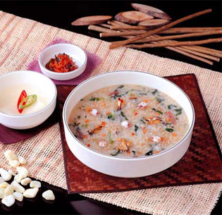
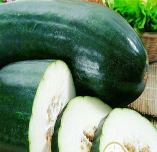

- 美容
- 肢寒畏冷
- 减肥瘦身
- 消化不良
- 烹饪技巧
- 养生
4种最天然美肌食物 让你拥有洁白无瑕的肌肤
-
1.柠檬加蜂蜜

-
2.食盐水
-
3.葡萄籽
-
4.银耳
冬季必吃 四种暖身滋补蔬菜
-
1.豆芽菜

-
2.菠菜
-
3.胡萝卜
-
4.花菜
4种减肥瘦身方法 让你拥有魔鬼般的身材
-
1.早餐减肥法
 -
2.中餐减肥法

-
3.晚餐减肥法

-
4.套餐减肥法

4大健康食物 帮助缓解消化不良
-
1.食盐水
-
2.脐橙
-
3.菠萝
-
4.香蕉
4道香辣特色美食 如何慢慢做成
-
1.麻婆豆腐

-
2.北京烤鸭

-
3.剁椒鱼头

-
4.油焖红烧肉

4种最天然养生食物 让你延年益寿身康体健
-
1.白萝卜

-
2.西红柿

-
3.小米粥
-
4.食盐水